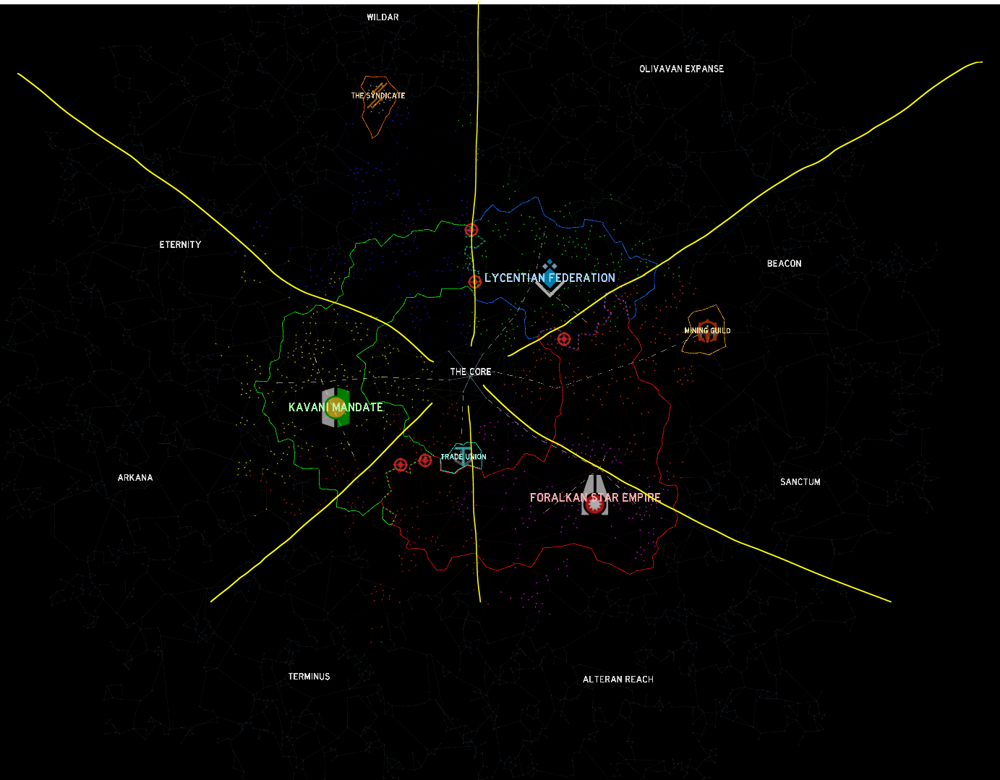

Nathan's Ultimate WH/FO Guide
Part 1 - what's a wh/fo?
WH/FO Hauling is a type of hauling in wild space in which you find 2 FO's on opposite sides on
the galaxy such that they
have optimal or near optimal spice prices (check wiki
for a table on spice
prices).
Then, you get a wormhole that connects closely connects both of them, so that you don't
have to do too many warp jumps (<5 or so jumps is good).
Since FO's sell gemstone spice instead of regular spice,
this technique can make millions of credits extremely quickly, and is the best way to make
money (besides investing).
Part 2 - how do i find a route?
This is the hardest part of WH/FO hauling. FO's are fairly uncommon, and finding wormholes that
connect wild systems
exactly across from each other at the galaxy is even rarer.
However, there are a few tips that I
can give, that will
hopefully limit your time scouting (and maybe save your life).
-
Look for a secure WH to enter wild.
Use wormholes to enter wild. whilst it may seem tempting to just warp to the wilds normally
(especially if you cant find
a wormhole to the wilds), there are 3 main reasons why you shouldn't. the first is that it
is simply quite dangerous to
warp the wilds, especially when you are at the outer unsecure systems and inner wilds.
pirates, whilst rare, are still a
threat that you should remember. reason two is that it can be quite tedious and slow to go
from citadel, into the wilds,
find a route, and then go all the way back, get a hauler, go all the way back again, haul,
and do another trip back to
the galaxy. it is way faster to simply use a wormhole and effectively skip all the
travelling involved. reason three is
that wormholes provide an easy gateway for smaller trips, and also can be used for other
expeditions (such as mining and
pve expeditions). additionally, wormholes are one of the safest places to be in wilds, since
they grant invincibility as
soon as you enter them, even if your ship is not inside the wormhole. this makes them
invaluable for wild campers.
-

Once in wild, look for a WH that leads to the opposite spice region.
As
seen in
the
image
at left,
drawing a straight line
from the borders of each spice region into wilds gives a decent image of what colour
spice
that system has. Just
remember, that the borders are not as simple as this, so FOs you find may actually
be a
different spice than what you
may expect. Keep track of any FO's you come across whilst looking for a suitable WH.
-
make sure to check every system 1 warp away, then 2, and so on from a potential route.
when your scouting, you may run
into a wormhole that seems optimal, but can't find any FOs nearby. this occurs fairly
commonly, and can be quite
annoying. however, an easy way to counteract it is to check every system 1 warp away
from the wormhole, then 2, and so
on until you find an FO. this prevents the route from being overly long, as has the
added benefit of allowing you to
cherrypick routes of certain lengths.
-
LOG YOUR FINDINGS. i know, i know. it can be annoying to have to find an anomaly, and
then write it down, but it makes
your life (and the lives of others using your route) so much easier. now, not every
anomaly is worth logging, of course.
Personally, besides wormholes and FO's (which you should be logging), the only other
worthwhile anomalies to log are VX
and AN anomalies, which can yield a lot of money. Other anomalies, such as MTs and ALs,
whilst profitable, are too
common to be worth going into wilds for.
-
After you find a WH/FO route, DO NOT TELL ANYONE YOU DONT TRUST. Telling routes
to
strangers is extremely dangerous, and
can lose both you and fellow users of your route a lot of money! Be cautious of who you
tell your routes to, and be sure
that they won't attempt to pirate you.
Part 3 - what do i do after i find a route?
Here comes the money-making part. After finding a
route, use the best
hauler you have. As a
general rule of thumb, ships
with more cargo storage are better, but some ships can be situationally better than others. For
example, a shroud may be
better than a galaxy if you are doing it with no or 1 alt, and have 2 warp amplifiers. Once you
arrive at the first FO,
buy the cargo and head to the Wh to get the second one. After this, continue selling and buying
from both FO's. You may
notice that prices start to rise after a while - but do not fret. If your WH is in an optimal
spice spot, you will
always make atleast 400 credits per cargo at maximum exhaustion. Don't forget your commerce
skill tree - maxing out
cargo on the commerce skill tree allows you to make almost twice the profit.
What ships to use
hauling ships, from best to worst
-
ok basically u want to use either a shroud or galaxy, as these are the two
best
hauling ships (if you dont have
these/cant afford them i'll say what else is alright). anyway, I see a lot of people asking
which they should use, and
how this affects rates. BASICALLY, a shroud with double warp amplifier is slightly better
than galaxy, provided that you
leave little to no gaps between warps, which when hauling with a single account is easy.
also, the shroud is
significantly faster than the galaxy, which is good for getting to cargo stations on FO's
faster and for entering
wormholes. however, if you are either A. on a route longer than 4 warps or B. multiboxing
(hauling on multiple accounts
at once), then you should basically always use galaxy. the shroud's benefits mean nothing if
each account may be waiting
between each warp, which is very prevalent in multiboxing (especially when it's over 3-4
accounts).
-
now, what if your POOR and cant afford either? well, welcome to the zubron. the zubron is
like one fifth the price of
the shroud and galaxy, yet it functions almost as well as them. plop 2 warp amplifiers on
it, and it can actually
outperform the galaxy (sometimes). astero and veil, the two other intermediate haulers, are
fine, but are just not as
good as the zubron in speed or hauling capacity.
-
but what if your B R O K E and cant even afford a corvette hauler? well, don't fret, since
you can use a bison (use this
over the rhino, just trust me on this). however, do note that if your hauling on a
semi-decent hauling route, that you
should basically switch to a zubron as soon as you hit 40k or so, since the bison is still
painfully slow.
What do those mean?
-
Optimal - the most asked one is most definitely "what does 'optimal' mean?". For a route to
be "optimal", it must go
from an FO on one side of the galaxy, and head to an FO on the exact opposite side. In the
star menu, you can turn on
spice colouring, which shows the six types of spice - blue, yellow, orange, pink, red, and
green. As you can see, they
are split evenly among the galaxy, with there being 3 on each side. A route that is optimal
will go from a spice sector
to the spice sector on the other side. for example, an optimal route with a blue FO will
connect to an FO on the other
side, with pink spice.
-
'x' warp - This term refers to how many system warps a route takes to haul once. for this,
you do not include warps
inside a system, such as warping to a wormhole or FO inside a system. The lower warp a
hauling route is, the faster it
is, with the best possible hauling route having 0 warps (no system warps whatsoever).
-
Stable, transient, and decaying - these terms refer to how long a wormhole has left until it
collapses. These are fairly
self explanatory - the majority of wormholes spawn as transient, meaning that they collapse
within 48 hours of spawning.
Stable wormholes are rare wormholes that can last 2 weeks before collapsing, and are usually
very sought after for their
longevity. decaying wormholes are wormholes that have under 6 hours left. Note that a
wormhole can spawn as a stable or
transient wormhole, but NOT a decaying wormhole.
Last notes
-
The optimal spice duos are: Jade/Ruby, Amber/Jasper, and Sapphire/Amethyst
-
Silver spice is NOT worth it (player pirates tend to camp syndicate)
-
More detailed information can be found
here